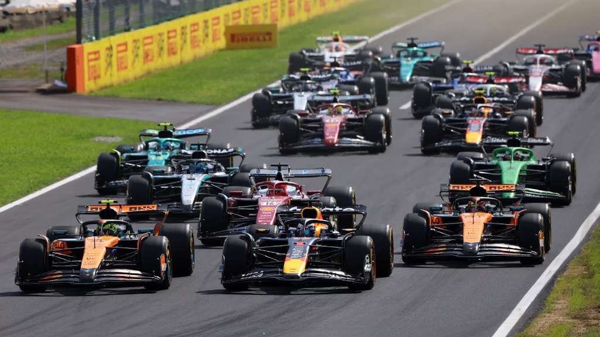

Learn F1 Strategy.
Create Your Own to Master the Race.
TrackLab is an interactive Formula 1 strategy laboratory and educational simulator. Learn how tire compounds, degradation curves, and pit stop timing determine Grand Prix victories, then build and simulate your very own custom race strategy against computer-modeled telemetry on Germany's high-speed Norisring street circuit.
What does "Boxing" mean?
In Formula 1, when an engineer radios "Box, box, box!", they are instructing the driver to enter the pit lane immediately for a pit stop. The term comes from the German word Boxenstopp and refers to the team's designated "pit box" area where 20 mechanics change all 4 wheels in under 2.5 seconds. In TrackLab, deciding which lap you box determines whether you win or lose.

Let’s walk through it.
How TrackLab models real-world Formula 1 dynamics on the Norisring street circuit.
Step onto the Pit Wall
Create your driver profile now to save custom strategies, race telemetry, and personal lap histories to the cloud.